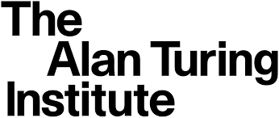
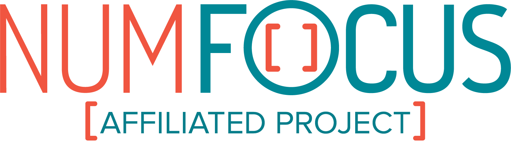

Funding#
sktime is a community-driven project, however institutional and private grants help to assure its sustainability.
If you would like to sponsor sktime, please visit our page on Open Collective.
We would like to thank the following sponsors.
Industry sponsorship#
Mercedes-Benz AG/Daimler AG donated 2500 EUR to support the maintenance and development of sktime in 2021, as part of their FOSS program.
Research grants#
The Alan Turing Institute funded three months of the initial development under the UKRI Strategic Priorities Fund (EPSRC grant no EP/T001569/1), particularly the Tools, Practices and Systems theme within that grant.
Markus Löning’s contributions between 2019 and 2021 were supported by:
the Enrichment Scheme at the The Alan Turing Institute,
the JROST Rapid Response Fund, a community effort of Invest in Open Infrastructure.

Institutional sponsorship#
The 2019 joint sktime MLJ development sprint was kindly hosted by UCL and The Alan Turing Institute. Some participants could attend thanks to the initial funding of the The Alan Turing Institute.
2022-2023, sktime was an officially affiliated project of the NumFOCUS organization.

Infrastructure#
We would also like to thank Microsoft Azure, GitHub Actions, AppVeyor and ReadtheDocs for the free compute time on their servers.
Internships#
Google Summer of Code (GSoC), Major League Hacking and Outreachy have all sponsored sktime internships.
The Wellcome Trust sponsored one sktime internship as part of Outreachy.
Name |
GitHub ID |
Organization |
Year |
|---|---|---|---|
Katie Buchhorn |
Google Summer of Code |
2022 |
|
Mirae Parker |
Google Summer of Code |
2022 |
|
Shivansh Subramanian |
Google Summer of Code |
2022 |
|
Guzal Bulatova |
Outreachy |
2021 |
|
Svea Marie Meyer |
Google Summer of Code via INCF |
2021 |